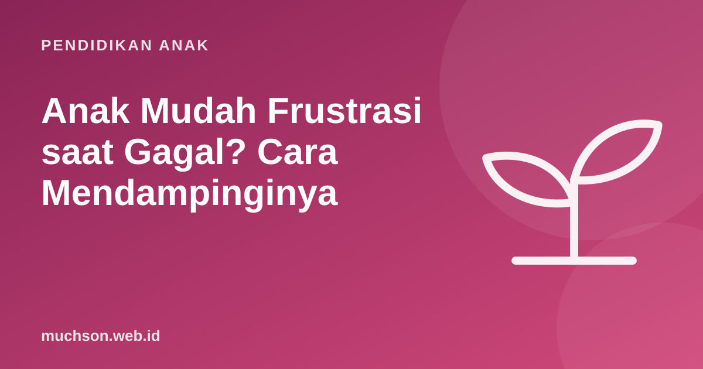

Beranda › Artikel › Pendidikan Anak
Pendidikan AnakAnak Mudah Frustrasi saat Gagal? Cara Mendampinginya
Puzzle dilempar, gambar dirobek, atau tangis meledak karena kalah main ular tangga. Anak yang mudah frustrasi bisa membuat orang tua bingung harus tegas atau menghibur. Kabar baiknya, kemampuan menghadapi kegagalan bisa dilatih. Kuncinya ada pada cara kita mendampingi emosi anak di saat-saat itu.

Kenapa anak mudah frustrasi?
Frustrasi muncul ketika ada jarak antara apa yang diinginkan anak dan apa yang bisa ia lakukan. Bagi anak, jarak ini sering terasa besar, karena kemampuan mengatur emosi (bagian dari fungsi eksekutif) masih berkembang. Menurut Center on the Developing Child di Harvard, kemampuan seperti menahan dorongan dan mengelola reaksi berkembang bertahap sepanjang masa kanak-kanak, dan sangat dipengaruhi oleh dukungan orang dewasa di sekitarnya.
- Harapan terlalu tinggi: ingin langsung bisa seperti kakak atau video yang ditonton.
- Lelah, lapar, atau kurang tidur: ambang frustrasi turun drastis.
- Jarang mengalami gagal yang aman: selalu dibantu atau dibiarkan menang.
- Takut mengecewakan: merasa harga dirinya ditentukan oleh hasil.
Tiga langkah saat frustrasi meledak
1. Tenangkan dulu
Saat emosi memuncak, nasihat tidak akan masuk. Turunkan nada suara, dekati, tawarkan pelukan atau tarik napas bersama. Bagi sebagian anak, menjauh sebentar dari benda yang membuatnya kesal sudah sangat membantu.
2. Namai perasaannya
Menamai emosi membantu anak memahami yang ia rasakan. "Kamu kesal ya, menaranya roboh terus padahal sudah hati-hati." Kalimat ini tidak menyetujui perilaku melempar, tetapi mengakui perasaannya. Banyak praktisi pengasuhan menyebut prinsip ini "namai untuk menjinakkan".
3. Cari jalan bersama
Setelah tenang, ajak anak mencari langkah berikutnya: "Mau coba lagi dengan cara lain, istirahat dulu, atau minta bantuan untuk satu bagian?" Memberi pilihan mengembalikan rasa kendali.
Kalimat yang membantu dan yang memperburuk
| Memperburuk | Membantu |
|---|---|
| "Begitu saja nangis." | "Kamu kecewa sekali ya. Itu wajar." |
| "Sini, Papa saja yang kerjakan." | "Mau Papa bantu satu bagian, atau mau coba dulu?" |
| "Kalau marah begitu, tidak usah main lagi." | "Kita istirahat dulu. Nanti kita coba lagi saat sudah tenang." |
| "Kakakmu saja bisa." | "Kemarin kamu juga belum bisa naik sepeda, sekarang bisa. Ini juga begitu." |
Membangun toleransi frustrasi
Toleransi frustrasi tumbuh lewat pengalaman gagal yang aman: kegagalan kecil yang tidak membuat malu, diikuti keberhasilan setelah berusaha. Beberapa cara memperbanyak pengalaman ini:
- Pilih tantangan yang pas. Sedikit di atas kemampuan anak, bukan jauh di atasnya.
- Main permainan dengan menang-kalah, dan jangan selalu mengalah. Anak perlu belajar kalah di lingkungan yang aman.
- Ceritakan kegagalan Anda. "Tadi kue Mama gosong. Besok Mama kecilkan apinya."
- Rayakan perbaikan, bukan hanya keberhasilan akhir.
- Pecah tugas besar. Kegagalan pada tugas kecil lebih mudah ditoleransi.
Kapan perlu bantuan profesional?
Ledakan emosi adalah bagian normal tumbuh kembang. Pertimbangkan berkonsultasi dengan psikolog anak bila ledakan sangat sering dan intens dibanding anak seusianya, membahayakan diri atau orang lain, berlangsung berbulan-bulan tanpa membaik, atau mengganggu sekolah dan pertemanan secara serius.
Anak belajar mengatur emosi dengan meniru orang dewasa. Saat Anda sendiri kesal karena kemacetan atau pekerjaan, ucapkan dengan tenang: "Papa kesal, Papa tarik napas dulu." Anak melihat contoh langsung.
Kegiatan dengan umpan balik cepat dan kesempatan mencoba ulang tanpa batas adalah tempat latihan yang baik untuk toleransi frustrasi. Coding adalah salah satunya: setiap bug adalah kegagalan kecil yang bisa langsung diperbaiki. PixelKode menambahkan petunjuk bertahap supaya anak tidak macet terlalu lama sampai menyerah.
Tanya jawab
Kenapa anak mudah marah saat gagal?
Apakah sebaiknya selalu mengalah saat bermain dengan anak?
Bagaimana menenangkan anak yang frustrasi?
Kapan frustrasi anak perlu ditangani psikolog?
Sumber dan bacaan lanjut
- Harvard Center on the Developing Child: Executive Function & Self-Regulation
- Mueller & Dweck (1998). Pujian dan motivasi setelah gagal
- Yogman, M. dkk. (2018). The Power of Play. Pediatrics